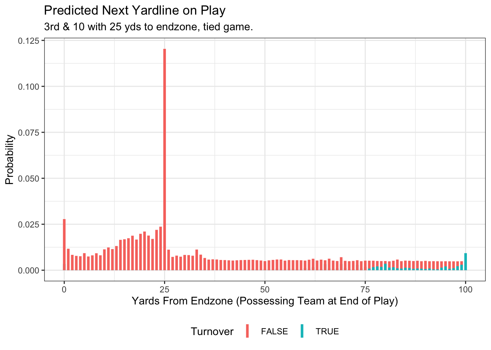
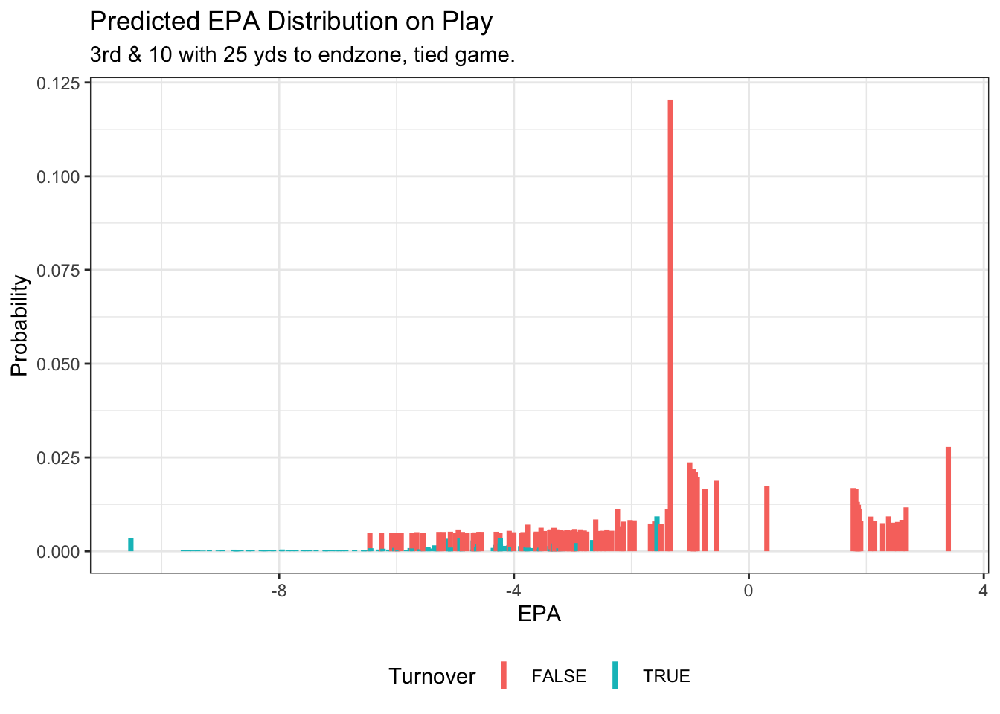

Expected Points Added (EPA) has emerged from an obscure stat from quants to the mainstream, occasionally making television broadcasts and as evidence for and against TV personality’s talking points analyzing football performance. Background lit review on history of EPA models from Carter & Machol, to Burke, to Baldwin, to Brill.
One advantage to using EPA as opposed to yards in football analysis is that it accounts for contextual information about the play that impacts the value of yards. For example 7 yards on 3rd and 5 is more valuable than on 3rd and 10 because the former results in a first down while the latter does not.
In team analysis, EPA allows division of credit among different units of a football team. If the offense throws a turnover in its own territory and the defense subsequently allows a field goal, EPA can tell us that the defense likely was a positive on the net scoring margin while the offense was negative in that sequence despite the three points allowed typically being assigned to the defense.
Similarly, if a punter is able to flip the field, the special teams unit will get credit for making the opposing offense have to go further to score.
Player Credit
EPA is used often to compare player performances. In fact total EPA gained on the season for quarterbacks mirrors closely the results of the MVP voting (source). In recent years, several attempts have been made to assign credit to players based on how that player’s teams unit performs in terms of EPA (Sabin Plus-Minus, Eager WAR, Yurko nflWAR, Baldwin EPA+CPOE composite, Kevin Cole WAR).
Barring extreme situations where a player intentionally gives himself up instead of scoring at the end of the game to preserve possession and ensure victory, the goal of each player on a football team on each play is to advance the ball as far as possible towards the end-zone as possible (for the offense) and likewise to prevent that from happening for the defense.
This begs the question, do we use EPA as the preferred metric because it’s the best metric to encapsulate individual and team performance on a play, or do we use it simply because it isn’t yards?
Flaws of EPA
This paper will examine three main flaws that EPA has.
The large jump in EPA at the 1st down line vs 1 yard short of the first down line while the difference in player and team performance can largely be attributed to chance.
EPA does not follow a symmetric unimodal distribution, and depending on the situation it can skew left, skew right, be bimodal, unimodal, and more! This means that EPA per play for a team, unit, or player is affected largely by situation before the results of the play occur.
Selection Bias. Until recently all EPA models were built off observed plays. Better teams have more plays in the opposing territory, biasing the expectation towards better teams in those situations. Brill & Wyner 2024 use catalytic priors in an effort to adjust expected points models for this selection bias.
Yards vs EPA
No one with a knowledge of football can argue that 10 yards on 3rd and 10 and 10 yards on 3rd and 20 are worth the same to the offensive team. EPA accounts for this problem.
Let’s consider the hypothetical situation, it is 3rd and 10 at exactly midfield in the 1st quarter of a 0-0 game.
Result A: The team gains 9 yards.
Result B: The team gains 10 yards.
Now in terms of EPA, according to the NFLFastR model the Expected Points before the play is 1.71 while the EPA for Result A is -0.09 compared to result B of 2.02.
While in yards the team gained 10% more in situation B than A, in EPA one play is drastically different than the other. That is a massive difference for players with essentially a coin flip difference in result (reference to Spatial proximity in causal inference).
Changing Distributional Shape of EPA Outcomes
Let’s look at the distribution of EPA for a pretty neutral situation at midfield for each down and play type (run & pass).
For each down there is a bimodal distribution of outcomes which gets larger variance and more skewness for each additional down. This matters because the means are pulled away from the center of the distribution towards the side of the skew. Players and teams that are in this situation will get credit or blame for in terms of EPA for simply performing at the median or 50th percentile. For example a 50th percentile performance for a run on 3rd down and 10 at the 50 is worth 0.83 EPA despite it being simply the median outcome!
We can look at the most common starting field position of the 25 yard line (usually after a kickoff) as well.
This work proposes a method to quantify performance of a team, player, and unit for each and every play by how well they performed in the distribution of outcomes in similar situations. Since each situation has varying distribution shapes and properties, values are first quantified as percentiles then mapped via various link functions to well-known distributions.
Modeling Distribution of Play Outcomes
In a given football play for the offense the offense either runs a play that results in a yardage gain or loss, or ends in a score (touchdown or safety).
The following multi-stage model encapsulates what could happen as a result of an offensive play: 1. P(\(T\)) where event \(T\) is a turnover 2. P(\(y \in 0, 1, 2,\ldots, 100 | T\)) where y is the possessing team yardline at the end of the play (0 is a touchdown and 100 is a safety). 3. P(\(y \in 0, 1, 2,\ldots, 100 | T^c\))
Then the complete distribution of the outcome of the play follows: \[
P(y) = P(y|T)P(T) + P(y|T^c)(1 - P(T)) .
\]
Then we feed the resulting yardline, down, possessing team into the NFLFastR expected points model such that \(z_{i,t,p+1} = E(x_{i,t,p+1}) - E(x_{i,t,p})\) where \(x\) is the eventual points scored at \(i \in 0, 1, \ldots, 100\) yardline outcome, \(t \in 0,1\) for turnover outcome for play \(p\). The resulting value of \(z\) is the corresponding Expected Points Added for each possible turnover and yardage outcome of the play.
For resulting touchdowns the expected points is assumed to be 6.96 and for safeties it is assumed as -2.0. The signs are negated if the result of the play is a touchdown or safety for the defensive team.
Classification Models
While theoretically the resulting yardline is a continuous value between 0 and 100, it is only recorded in public data as discrete integer values from 0 to 100. An xGBoost classification model is fit for the turnover probability and the two yardline models (one conditional on no turnover and the other conditional on there being a turnover).
Code
## load xgboost modelsto_model <-xgb.load("models/to_model_all_season.model")to_yrdline_model <-xgb.load("models/to_yrdline_all_season.model")no_to_yrdline_model <-xgb.load("models/no_to_yrdline_all_season.model")unique_yrdline_labels <-0:100n_unique_yrdline_labels <-length(unique_yrdline_labels)nfl_schedule <- nflreadr::load_schedules()input_season <-max(nfl_schedule$season)#take inputs and create data to use into model home <-1 away <-0 neutral <-0 qb_dropback <-1## temperature, wind, outdoors, & grass field outdoors_stadium <-0 surface_grass <-1 temp <-ifelse(outdoors_stadium ==1, 50, -99) wind <-ifelse(outdoors_stadium ==1, 5, -99)#down/distance down <-3 ydstogo <-10 yardline_100 <-25#current score team_score <-0 opp_score <-0 current_tot_score <- team_score + opp_score current_score_diff <- team_score - opp_score#timeouts team_timeouts <-3 opp_timeouts <-3#clock half <-1 half_seconds_remaining <-25*60 play_clock <-15#posteam & home_team# posteam <-'ARI' home_team <-case_when(home ==1~ posteam, away ==1~'IND',#pretend the home_team is Colts (dome team) for now if it's not buffalo neutral ==1~ posteam) defteam <-ifelse(posteam =='ARI', 'BLT', 'ARI')# default away team (doesn't really matter as long as its different)# Data Wrangling Predicted Distributions ----------------------------------#define all variables into one matrix/tibble input_tibble <-tibble(home, away, neutral, qb_dropback,## , outdoors_stadium, surface_grass, temp, wind,#down, down, ydstogo, yardline_100,#current, current_tot_score, current_score_diff,#timeouts, team_timeouts, opp_timeouts,#clock, half, half_seconds_remaining, play_clock,#teams posteam, home_team, defteam ) exclude_vars <-c("turnover","target","season","game_id", "epa","play_id","posteam","home_team","defteam")#predicted data row predict_play_dist <- input_tibble %>%select(-any_of(exclude_vars) ) predict_play_xgbdata <-xgb.DMatrix(data =as.matrix(predict_play_dist) )# Combine Models to Get Next Play Distribution predict_to_prob <-predict(to_model,reshape =TRUE, predict_play_xgbdata)[,2] pred_tibble <-tibble(next_yrdline_100 = unique_yrdline_labels,team_yrdline_prob =predict(no_to_yrdline_model,reshape =TRUE, predict_play_xgbdata)[1,],opp_yrdline_prob = predict_to_prob*predict(to_yrdline_model,reshape =TRUE, predict_play_xgbdata)[1,] ) %>%pivot_longer(cols =ends_with("_prob"),values_to ="prob",names_to ="posteam_label") %>%#normalize probabilitiesmutate(prob = prob /sum(prob),posteam_label =str_extract(posteam_label, "team|opp"))#adjust predicted distribution variables based on the yardline result pred_next_play_tibble <- pred_tibble %>%bind_cols(input_tibble %>%mutate(season = input_season,roof =ifelse(outdoors_stadium ==1, 'outdoors', 'dome')) ) %>%rename(posteam_timeouts_remaining = team_timeouts,defteam_timeouts_remaining = opp_timeouts) %>% nflfastR::calculate_expected_points() %>% dplyr::select(ep:last_col()) %>%#save off starting down, dist, yrdline, scorerename(ep_start = ep) %>%mutate(down_start = down,yardline_100_start = yardline_100,distance_start = ydstogo,score_diff_start = current_score_diff ) %>%#based on if turnover or not adjust, posteammutate(posteam_start = posteam,posteam2 =ifelse(posteam_label =='team', posteam, defteam),defteam2 =ifelse(posteam_label =='team', defteam, posteam), ) %>% dplyr::select(-posteam, -defteam) %>%rename(posteam = posteam2,defteam = defteam2) %>%#adjust down, ydstogo, posteam based on outcome of playmutate(first_down_yrdge = (yardline_100 - next_yrdline_100) >= ydstogo | posteam_label =="opp",#did you get the required yards or is it a turnover?turnover_on_downs = down ==4&!first_down_yrdge) %>%#switch possessing teams if turnover on downsmutate(posteam2 =ifelse(turnover_on_downs, defteam, posteam),defteam2 =ifelse(turnover_on_downs, posteam, defteam), ) %>% dplyr::select(-posteam, -defteam) %>%rename(posteam = posteam2,defteam = defteam2) %>%mutate(down =case_when(turnover_on_downs ~1, #turnover on downs first_down_yrdge ~1,#got the first down next_yrdline_100 %in%c(0,100) ~NA_real_,#either a TD or Safety so no downTRUE~ down +1), #didn't get the first downydstogo =case_when(is.na(down) ~NA_real_, down ==1~10,TRUE~ next_yrdline_100 - (yardline_100 - ydstogo) ) ) %>%as_tibble()#for next play, take half_seconds_remaining and subtract 5 with minimum of 1 pred_next_play_tibble <- pred_next_play_tibble %>%mutate(half_seconds_remaining =pmax(half_seconds_remaining -5, 1))##TO DO:#1 just keep the EP column#2. replace td's & safeties with 6.95 or 2 etc.#3. make sure the EP column is in the right team's reference for turnover on downs and other turnovers next_play_distribution <- pred_next_play_tibble %>%mutate(season = input_season,roof =ifelse(outdoors_stadium ==1, 'outdoors', 'dome')) %>%rename(last_yrdline_100 = yardline_100, yardline_100 = next_yrdline_100) %>% nflfastR::calculate_expected_points() %>% dplyr::select(ep:last_col()) %>%mutate(ep =ifelse(yardline_100 ==0, 6.96, ep),#td valueep =ifelse(yardline_100 ==100, -2, ep),#safety valueturnover = posteam != posteam_start,#if ep is for a turnover (or turnover on downs) make value of ep negativeep_new =ifelse(turnover, -ep, ep),epa = ep_new - ep_start,yards_gained = yardline_100_start - yardline_100 ) %>% dplyr::select(season, posteam, defteam, yardline_100, yards_gained,ep = ep_new, epa, turnover, prob, down, ydstogo,ends_with("_start") )#calculate the quantile of the actual play & sequence of quantiles for the play quantiles_to_save <-c(0.005, 0.01, seq(0.05, 0.95, by =0.05), 0.99, 0.995) next_play_distribution <- next_play_distribution %>%arrange(epa) %>%mutate(cdf_val =cumsum(prob)) %>%as_tibble()# Use approx to interpolate quantile_values <-approx(x = next_play_distribution$cdf_val,y = next_play_distribution$epa,xout = quantiles_to_save) %>%bind_rows() %>%rename(quantile = x,epa = y)#function saved to calculate quantile for this play impute_epa_quantile_fun <-approxfun(y = next_play_distribution$cdf_val,x = next_play_distribution$epa)## combine output play outcome distributions & save# predict_play_dist$play_quantile <- impute_epa_quantile_fun(predict_play_dist$epa)# plot epa distribution next_epa_dist_ggplot <- next_play_distribution %>%ggplot(aes(x = epa, y = prob,col = turnover)) +geom_linerange(aes(ymin =0, ymax = prob),linewidth =1.25) +ylab("Probability") +xlab("EPA") +ggtitle("Predicted EPA Distribution on Play",subtitle =paste0(down,case_when(down ==1~"st", down ==2~"nd", down ==3~"rd", down ==4~"th")," & ", ydstogo, " with ", yardline_100," yds to endzone, ",case_when(current_score_diff ==0~"tied game.", current_score_diff >0~paste0("up by ", current_score_diff, "."), current_score_diff <0~paste0("down by ", current_score_diff, ".") ) ) ) +theme_bw() +theme(legend.position ='bottom') +scale_color_discrete("Turnover") next_epa_dist_plotly <- next_epa_dist_ggplot %>%ggplotly()# plot next yardline distribution next_yrdline_dist_ggplot <- next_play_distribution %>%ggplot(aes(x = yardline_100, y = prob,col = turnover)) +geom_linerange(aes(ymin =0, ymax = prob),linewidth =1.25) +ylab("Probability") +xlab("Yards From Endzone (Possessing Team at End of Play)") +ggtitle("Predicted Next Yardline on Play",subtitle =paste0(down,case_when(down ==1~"st", down ==2~"nd", down ==3~"rd", down ==4~"th")," & ", ydstogo, " with ", yardline_100," yds to endzone, ",case_when(current_score_diff ==0~"tied game.", current_score_diff >0~paste0("up by ", current_score_diff, "."), current_score_diff <0~paste0("down by ", current_score_diff, ".") ) ) ) +theme_bw() +theme(legend.position ='bottom') +scale_color_discrete("Turnover") next_yrdline_dist_plotly <- next_yrdline_dist_ggplot %>%ggplotly()
Transitioning Classification Model to EPA Distribution
Using the 202 unique classification outcomes (101 for no turnover and 101 if there’s a turnover), we can then convert the outcome of the play to asses what the new Expected Points of the next play will be. From there we can subtract from the expected points from before the play and get the 202 unique values of EPA that could result from the play outcome.
To keep things simple, we assume no timeouts remain the same before and after the play. We also assume exactly 5 seconds come of the clock on the play, or until the clock hits 0 on a quarter if there are less than 5 seconds left.
Plays that result in a touchdown (yardline = 0) are assumed to have expected points of 6.96 while plays that result in a safety (yardline = 100) are assumed to have -2 expected points.
In the example we have a 3rd and 10 at our other teams 25 yardline (25 yards from endzone), we use the classification models to calculate the probability of the next play resulting in any of the 202 possession & yardline combinations.
The current model would give an output that looks like this:
Code
next_yrdline_dist_ggplot

Then applying the expected points after each of the possible play outcomes we can develop a distribution of possible EPA outcomes:
Code
next_epa_dist_ggplot

Mapping Distributions
For each play in the dataset I saved the quantiles from the estimated EPA distribution from 0.005 to 0.995 in intervals of 0.005. I also calculated the observed EPA value and its quantile in the estimated distribution. For values greater than 0.995 and less than 0.005 I assumed those extremes to protect against extreme tail behavior.
From there I convert the observed quantiles for each play to different known distributions:
Standard Normal Distribution
Standard t distribution with 5 degrees of freedom (1 degree of freedom or Cauchy had erratic behavior so it was omitted)
Standard laplace distribution
Gamma distribution
The mean and variance of the gamma were decided to be equivalent to the observed mean and variance of EPA across all offensive plays after you subtract off the smallest observed EPA value so the support is positive like a Gamma distribution.
Simulation Study
One measure of the effectiveness of EPA has been how well correlated it is with itself on a per play basis for values intra-season or the next season. This is sometimes referred to as stability. The thought process is that if a trait or metric is stable for a team or player, it reflects somewhat a measure of skill or ability. This of course isn’t always true as any arbitrary value would have a correlation of 1 with itself and human scouting bias may result in a higher stability since a human knows who they are watching.
Intra-season Stability
I wanted to see if any of these metrics perform better than EPA for both quarterbacks and for team offenses and defenses. For intra-season comparison, I perform a bootstrap simulation by sampling 8 weeks of the season and then comparing those 8 weeks per play numbers to the per play numbers for the remaining weeks.
For year to year comparison, I perform a bootstrap where I sample 300 unique player x season or team x play type (run/pass) x season in each bootstrap. Then I calculate the Pearson Correlation Coefficent of the previous year’s value to this seasons value. I perform 1000 bootstrap samples.
For intra-season metrics, the standard normal transformed values tend to correlate with the other half of the season the best while EPA does quite poorly.
For season to season it tends to be almost the opposite where EPA has a higher stability than the others. This may be because EPA does best with larger sample sizes but struggles with smaller samples due to the “cliffs” that exist around the first down line.
When evaluating teams on the season EPA is still a very good metric, but for players perhaps there is something better. If we want to evaluate the value of a player on a play, should we really discount them several points because they gained 9 yards on 3rd and 10 instead of 10? Yes, 10 yards is worth a lot more, but the player got most of the way there and there is a lot (but maybe not complete) randomness between getting 9 yards and 10.
Another idea is to model directly the distribution of EPA on a play via mixture of normals, or a distributional Random Forest.
The idea ultimately is to be able to compare two plays in two completely different contexts and know which result was more impressive given expectation (accounting for play call such as run or pass) in a predictive sense. Otherwise using any play outcome to evaluate players who participated in that play is going to suffer from some bias of players being used in certain settings, some of which are more likely to have bigger plays than others (or vice-versa) and none of it being due to the ability (or lack thereof) of the player.